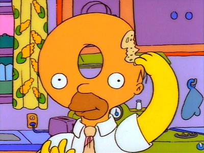

<HTML>
<HEAD>
<TITLE> 
Focus and Control, Knowledge and Use
</HEAD>
<BODY ALIGN=JUSTIFY>
<HR><!------------------------------------------------------------------------>
<H1 ALIGN=CENTER> 
Focus and Control, Knowledge and Use
</H1>



<H3> Focus and Control </H3>
<UL>
<LI> SPASS is sound, therefore SPASS-XDB is sound
<LI> SPASS assumes all axioms are in the problem file
<LI> Regain completeness by relaxing SPASS' constraints
<LI> <STRONG>Developments to recover loss of focus and control</STRONG>
</UL>

<H3> Knowledge and Use </H3>
<UL>
<LI> Humans expect broad knowledge, friendly interfaces
<LI> No resources to curate data ... <STRONG>mediate external data</STRONG>
<LI> Many data sources, many languages ... <STRONG>make interfaces</STRONG>
<LI> Demonstration of potential ... <STRONG>some fun examples</STRONG>
</UL>
<P>
<HR><!------------------------------------------------------------------------>
</BODY>
</HTML>
